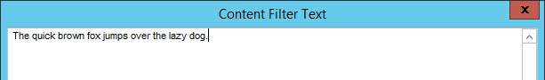

This topic describes how to create and manage Content Filters that are used to determine what information should not be included in the case. To learn more about Content Filters and Indexes, watch the Content Filters and Indexes video.
Make sure you understand your case data and which content should be filtered out from your analytics index (confidentiality notices, email signatures, etc).
Start
On the Case Management ribbon, select IPRO Eclipse Analytics > IPRO Analytics Content Filters.
Select the needed managing client and case.
Continue with the procedures explained in this section.
To create a new Content Filter:
Click the New Filter button to open the Content Filter Text window.
Enter the content you would like to be filtered out of your case.

Once the content has been entered and reviewed for accuracy, click OK.
|
|
Note: If the text entered matches an already existing filter, an error will notify you that the filter has already been created, and the new filter will not be added to the case. |
Repeat these steps for any additional content you would like to be excluded from the case.
Complete the steps described in
To edit a filter, click the corresponding  to the filter you would like to change. This will open the Content Filter Text window.
to the filter you would like to change. This will open the Content Filter Text window.
Make any necessary changes to the text in the filter and click OK.
Complete the steps described in
To delete a filter, click the  corresponding to the filter you would like to delete. This will open a dialogue box that confirms whether or not you “want to delete all filters.” This action is permanent, so double-check to make sure you have selected the correct filter before continuing. If you would like to proceed deleting the selected filter, click OK. If not, click Cancel.
corresponding to the filter you would like to delete. This will open a dialogue box that confirms whether or not you “want to delete all filters.” This action is permanent, so double-check to make sure you have selected the correct filter before continuing. If you would like to proceed deleting the selected filter, click OK. If not, click Cancel.
|
|
Note: If you would like to delete ALL of the filters associated with a selected case, click the Delete All Filters button and follow the same instructions with the dialogue box as mentioned in Step 2. |